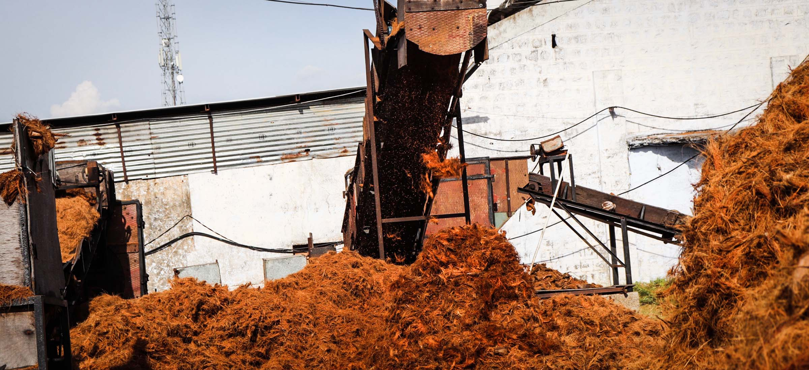
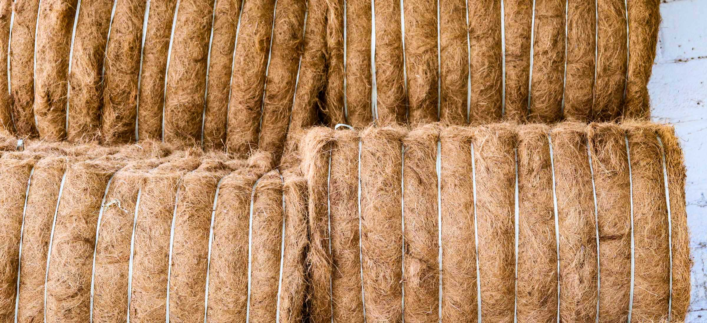
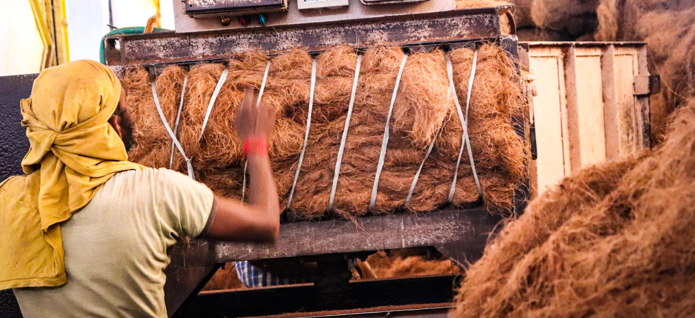
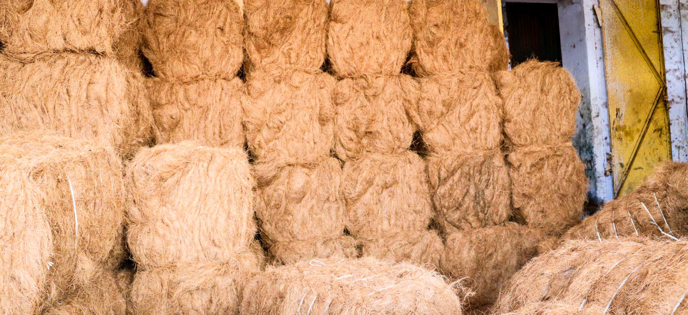
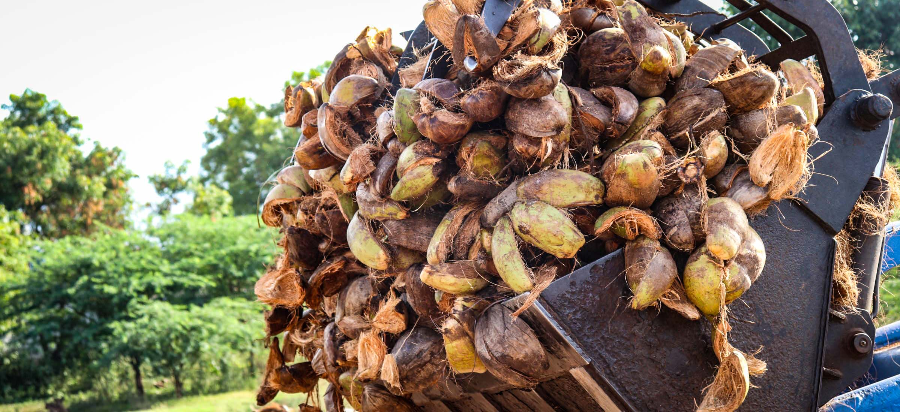
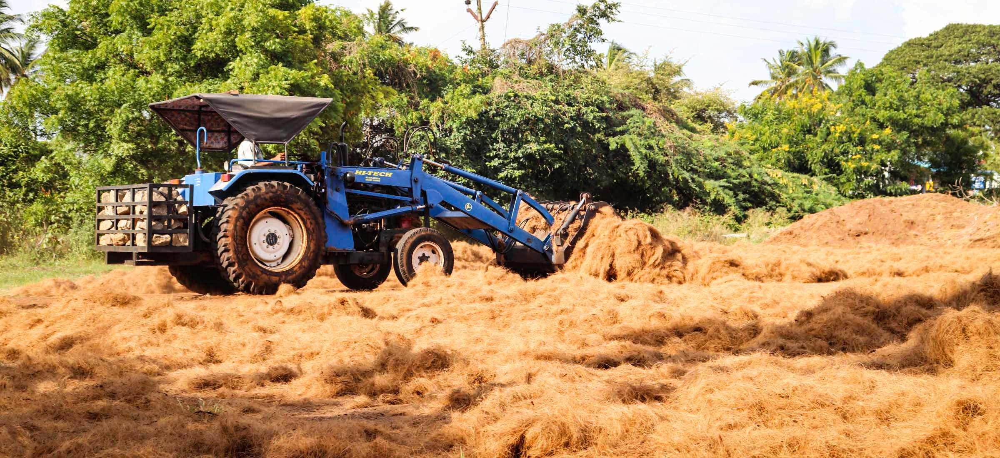
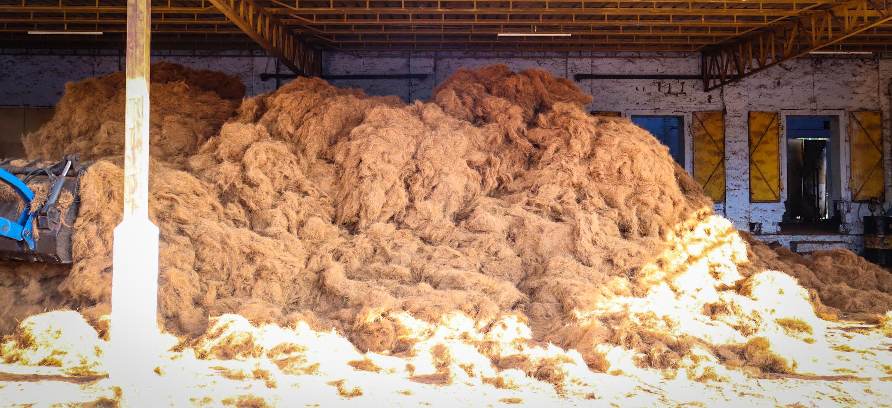

<div id="workwithus" class="pb-5 ">
  <div class="px-g">

    <div class="ch-container workwithus px-0">
      <div class="overflow-hidden">
        <div data-aos="fade-up" data-aos-duration="600" class="section-heading">Work with us</div>
      </div>
      <div class="overflow-hidden">
        <hr   data-aos="fade-right" data-aos-duration="600"  class="ch-hr">
      </div>
      <div class="overflow-hidden" >

        <div data-aos="fade-up" data-aos-duration="600" data-aos-delay="50" class="workwithus-content mt-3">We are committed and much delightful to work together worldwide to refine soil conditions and improving farming techniques.
          <br><br>Coir Hub is where you can find all coir products under one roof. We manufacture and supply a wide range of 100% natural and biodegradable coir products for the sustainable farming and healthy practices. Our products has multiple benefits which includes the ability to retain water and provides aeration to the soil that helps in developing strong and healthy root systems. Let’s join together to  feed the soil!
        </div>
      </div>
    </div>
  </div>
  <!-- <div class="mt-5 position-relative">

    <div class="carousel" data-aos="fade-up" data-aos-duration="600" data-aos-delay="100">
      <div class="citem"> </div>
      <div class="citem"> </div>
      <div class="citem prev-wait"> </div>
      <div class="citem prev"> </div>
      <div class="citem active"> </div>
      <div class="citem next"> </div>
      <div class="citem next-wait"> </div>
      <div class="citem"> </div>
    </div>
    <div >

      <div class="carousel-btn d-flex align-items-center justify-contents-center">
        <div class="carousel-prev-btn" (click)="onPrev()">
          
        </div>
        <div class="carousel-next-btn" (click)="onNext()">
          
        </div>
      </div>

    </div>


  </div> -->
  <!-- <div class="position-relative" *ngIf="gallery.length > 0">
    <div class="carousel-bg"></div>

    <div class="my-5 ch-container carousel-cont" data-aos="fade-up" data-aos-duration="600" data-aos-delay="100">
      <carousel [interval]="myInterval" [(activeSlide)]="activeSlideIndex" >
        <slide *ngFor="let slide of gallery; let index=index">
          
        </slide>
      </carousel>
    </div>
  </div> -->
  </div>

